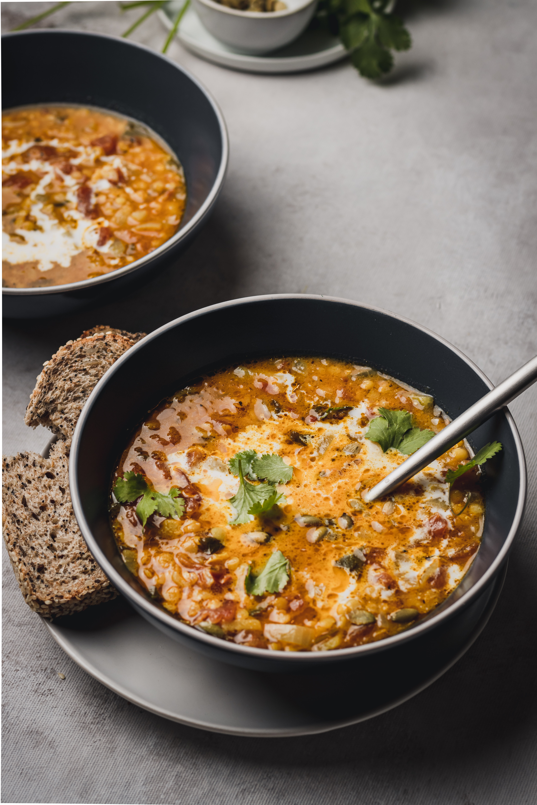

Pollo con mix de vegetales
Ingredientes
- - 200gr de garbanzos cocidos
- - 1 pechuga de pollo
- - 1 brocoli pequeño
- - 1 calabacin pequeño
- - 1 zanahoria
- - 1 cebolla
- - 1 diente de ajo
- - Aceite de oliva
- - Sal
Preparacion
- 1. Empezamos con el pollo. Lo cortamos en tiras (sin piel ni huesos) y lo ponemos a macerar con un diente de ajo picado y un par de cucharadas de aceite.
- 2. Mientras preparamos las verduras. La zanahoria la limpiamos, "pelamos" y cortamos en bastones finos, el brócoli lo separamos en arbolitos y el calabacín lo limpiamos y cortamos con piel en dados, además la cebolla la pelamos y cortaremos en juliana.
- 3. En una sartén salteamos el pollo hasta dorarlo, lo reservamos. Añadimos en la misma sartén la cebolla, dos minutos después el resto de verduras y salteamos un par de minutos más.
- 4. Añadimos el pollo y los garbanzos y removemos, mezclando y salteando a la vez durante otros dos o tres minutos.
- 5. Al sacar el salteado de garbanzos con pollo y verduras lo pasaremos a una fuente de inmediato. Si queréis podéis añadir un poco de zumo de limón y cilantro fresco picado.
Wok con champiñones
Preparacion
- 1. Hervir arroz
- 2. En una sartén profunda poner un hilo de aceite y agregar los ajos picados y la cebolla picada, junto con los condimentos, sal, pimienta, cúrcuma, pimentón curry , todo lo que quieras. Revolver para que las especias no se quemen.
- 3. Cuando la cebolla vaya cambiando a transparente agregar el morrón picado, los champiñones y el tomate pelado.
- 4. Agregar el vino y cocinar unos minutos para que evapore y luego añadir la salsa de soja y una cucharadita de azúcar
- 5. Volcar el arroz al wok y mezclar.
Igredientes
- - 2 tazas de arroz
- - 1/2 morrones, si tienes de los 3 colores mejor
- - 2 dientes de ajo
- - 1/2 tazas de salsa de soja sin tacc
- - 200gr de champiñones
- - Sal, pimienta y demas condimentos a gusto
- - 1 cucharada de azucar
- - 1 tomate pelado

Carne al horno con verduras
Ingredientes
- - 3 bifes de carne vacuna
- - Mantequilla blanda
- - Mostaza
- - Sal y pimienta
- - 1 cucharada de tomillo
- - 1 cucharada de oregano
- - 4 o 6 papas pelada secas
- - 2 cebollas trozadas
- - 1 pimenton trozado
- - 2 zanahorias peladas y trozadas
- - 1 taza de caldo de verdura
Preparacion
- 1. Cubrir los bifes con aceite, mantequilla y un poco de mostaza. Sazonar con sal y pimienta.
- 2. En un sartén a fuego alto, calentar 2 cucharadas de aceite. Añadir la carne y sellar por todos lados hasta dorar muy bien, 10-15 minutos.
- 3. Poner la carne en una fuente y espolvorear con las hierbas. Agregar las papas, cebollas, pimentón y zanahorias. Rociar con aceite y espolvorear con sal y pimienta.
- 4. Cocinar en el horno a temperatura alta 20-25 minutos. A los 10 minutos de cocción rociar con una taza de caldo. Si las verduras o carne no están cocidas tapar con papel aluminio y cocinar 10 minutos más.
- 4. Retirar del horno y dejar reposar 10 minutos antes de cortar para que se concentren los jugos. Acompañar con las verduras.